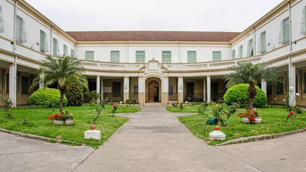

Competencias Adquiridas
La formación secundaria me brindó las bases académicas y humanas necesarias para el desarrollo profesional posterior:
- Pensamiento crítico, resolución de problemas lógico-matemáticos y comprensión lectora avanzada.
- Habilidades de trabajo en equipo, comunicación efectiva y gestión de proyectos escolares grupales.
- Fundamentos de informática orientada al procesamiento de textos y hojas de cálculo comerciales.
Período de Cursada
Fecha de ingreso: Marzo de 2014
Fecha de finalización: Diciembre de 2019
La Institución
